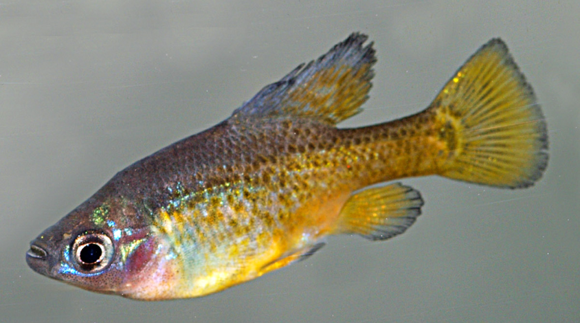

Systématique
- Ordre : Cyprinodontiformes
- Famille : Goodeidae
- Genre : Skiffia
- Espèce : S. francesae
- Auteur : Kingston, 1978

Skiffia francesae est un petit goodeidé magnifique et tragique. Surnommé le "Golden Skiffia" en raison des reflets dorés brillants que les mâles développent sur le corps et les nageoires, il est malheureusement éteint dans la nature depuis la fin des années 1970.
Le mâle mesure environ 3,5 à 4 cm et se reconnaît à sa couleur dorée intense et à sa nageoire dorsale développée. La femelle est plus grande (environ 5 cm) et présente une coloration beaucoup plus terne, grise ou olive, avec parfois quelques points sombres sur les flancs. Les mâles possèdent une encoche caractéristique sur la nageoire anale, l'andropodium, typique des Goodeinae.
L'espèce est classée **"Éteinte à l'état sauvage" (EW)**. Elle a disparu de son seul habitat connu, le Rio Teuchitlán, principalement à cause de la pollution, du pompage de l'eau et de l'introduction d'espèces invasives compétitrices. Tous les spécimens vivant aujourd'hui descendent de quelques individus collectés avant la disparition de la population sauvage.
C'est un poisson vif, curieux et social. Les mâles sont particulièrement actifs et passent beaucoup de temps à parader toutes nageoires déployées pour impressionner les femelles ou les autres mâles. Malgré ces parades, l'agressivité est limitée et ils peuvent vivre en groupe sans problème.
En aquarium, ils apprécient un décor riche en plantes et en cachettes, mais ont besoin d'un espace de nage libre. Ils sont sensibles à la qualité de l'eau, et comme ils n'existent plus qu'en captivité, il est de la responsabilité de l'éleveur de maintenir des conditions optimales pour préserver la lignée génétique.
Mode : Vivipare matrotrophe.
La reproduction est fascinante : les embryons se développent dans l'ovaire et sont nourris par la mère via des structures semblables à des cordons ombilicaux appelées trophotaeniae. La gestation dure entre 50 et 60 jours.
Les portées sont petites, généralement de 10 à 20 alevins. Les petits naissent déjà très grands (environ 10-12 mm) et peuvent manger immédiatement de la nourriture fine. Ils sont souvent ignorés par les adultes, ce qui facilite leur élevage.
Dimorphisme sexuel : Très marqué. Le mâle est doré, plus petit et possède un andropodium. La femelle est plus grande, plus terne et plus ronde.
Espérance de vie : 3 à 4 ans en aquarium.
Son habitat originel était le Rio Teuchitlán, un affluent du Rio Ameca dans l'État de Jalisco au Mexique. Il vivait dans des zones de sources et de canaux à courant lent, riches en végétation aquatique et avec un fond de vase et de débris organiques.
L'eau y était alcaline, moyennement dure, et les températures restaient modérées. Aujourd'hui, des projets de réintroduction sont à l'étude dans des zones protégées du bassin du Rio Ameca pour tenter de redonner à cette espèce une existence sauvage.
Répartition

Origine naturelle :
- Mexique : État de Jalisco (Rio Teuchitlán).
- Statut : Éteint à l'état sauvage (EW).
- Conservation : Maintenu uniquement en captivité.
C'est une espèce prioritaire pour le "Goodeid Working Group", qui coordonne sa préservation à travers le monde.
Paramètres de maintenance
Température : 18 à 24 °C. Éviter les fortes chaleurs constantes.
pH : 7,5 à 8,2.
GH : 10 à 20 °dGH.
Courant : Faible.
Volume conseillé : 60–80 L pour un petit groupe.
Régime alimentaire
Régime : Omnivore à tendance herbivore / algivore.
Il accepte volontiers les nourritures sèches, mais il est crucial de lui apporter une part végétale importante (spiruline, algues). Les proies vivantes ou congelées (daphnies, artémias) sont essentielles pour maintenir leur vigueur et leurs couleurs dorées.